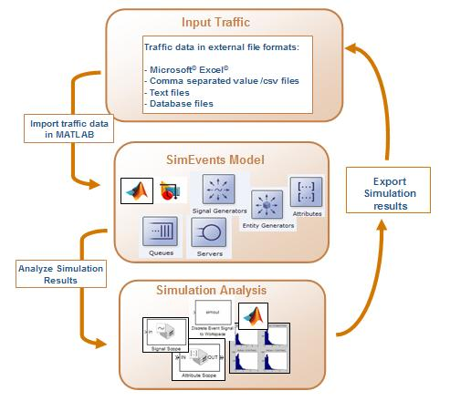
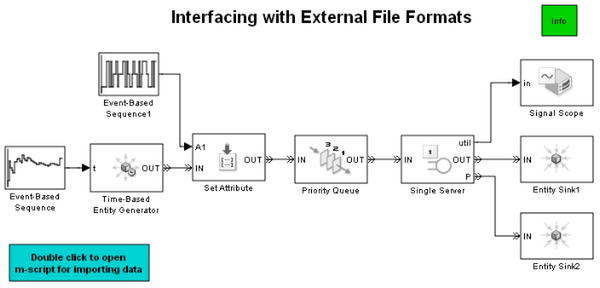

Interfacing with External File Formats
Contents
Overview
It is important to validate or test a simulation model against real data from a system. For example if the intergeneration time for an Entity Generator exactly matches the input traffic pattern in a system, the simulation analysis becomes very valuable. The input data in a real world system may be recorded in a file format external to the MATLAB® environment. MATLAB has a rich set of functionality to import/export data from/to a variety of external file formats. In this demo model we use a Microsoft® Excel® file as an example to illustrate the data import functionality in the context of a SimEvents® model. The following figure illustrates this workflow.

Import Data from a Microsoft Excel File
The function 'TimeAndPriorityData.m' imports the Intergeneration Time and Priority data from a Microsoft Excel file using the 'xlsread' function in MATLAB. The Intergeneration Time data is used by the Event-Based Sequence block to provide intergeneration time values to the Time-Based Entity Generator block. The Priority data values are used by the Set Attribute block in order to set a Priority attribute to each entity. The Single Server serves the entities sorted according to the 'Priority' attribute.
